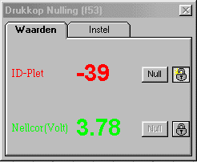
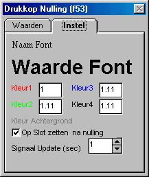

(FF2) (Drukkop) nulling and middeling (f53)
 17-09-2003, functie 53 verbeterd, bepaald nu lopend gemiddelde, getallen display bevatte een bug, kalibratie gegevens worden doorgegeven aan uitgangen, display tijd kan nu ook op fracties van seconden worden ingesteld
17-09-2003, functie 53 verbeterd, bepaald nu lopend gemiddelde, getallen display bevatte een bug, kalibratie gegevens worden doorgegeven aan uitgangen, display tijd kan nu ook op fracties van seconden worden ingesteld
Omschrijving
Met deze functie is continue een drukknopje beschikbaar om bijvoorbeeld drukkoppen te nullen.
Tevens worden de signalen (gemiddelde) numeriek weergegeven.
Het venster waarin alles zich afspeelt is geheel schaalbaar en vrij plaatsbaar op het scherm.
De functie is speciaal gemaakt voor de drukkoppen in gebruik in het ziekenhuis (Baxter), deze hebben wel een nauwkeurig gedefiniëerde versterking maar het nulpunt verschilt sterk per exemplaar.
Gebruik overigens voor arteriële bloeddruk of soortgelijke signaalen functie 54, daar deze direct een aantal afgeleide signalen berekent (diastole, systole, map, hr).
|
 |
Door op het slotje te klikken, kan de Null-knop al dan niet worden enabled. Afhankelijk van de instelling, wordt na het indrukken van een Null-knop, de betreffende Null_knop al dan niet gedisabled. Signaal namen, eenheden en calibratie worden automatisch uit de signaal tabel afgeleid. Door voor een ingangssignaal een systeem signaal als TRUE te kiezen wordt het signaal uitgeschakeld. Signaal kleur en fonts kunnen worden ingesteld. |
|
Door op "Naam Font" of "Waarde Font" te klikken, kunnen de fonts van respectievelijk de signaalnaam + eenheid c.q. de waarde worden ingesteld (behalve de kleur). Door op Kleur1 ... Kleur4 te klikken kan de kleur van een signaal worden ingesteld. Middels het format-veld kan aangegeven worden hoeveel decimalen achter de punt moeten worden weergegeven. Als "Op Slot zetten na nulling" is aangekruist, wordt een signaal geblokkeerd voor nulling, zodra eenmaal een nulling is uitgevoerd. Signaal Update geeft aan na hoeveel seconden een nieuwe meetwaarde in het meetvenster verschijnt ( de weergegeven meetwaarde is het gemiddelde over deze periode).. |
 |
Copyright Instrumentele Dienst
SM/GvV, 17-01-2000